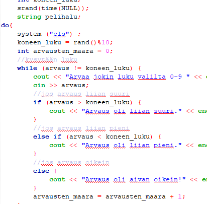
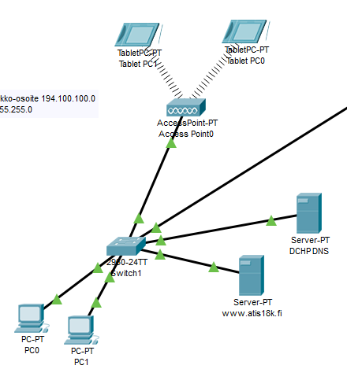
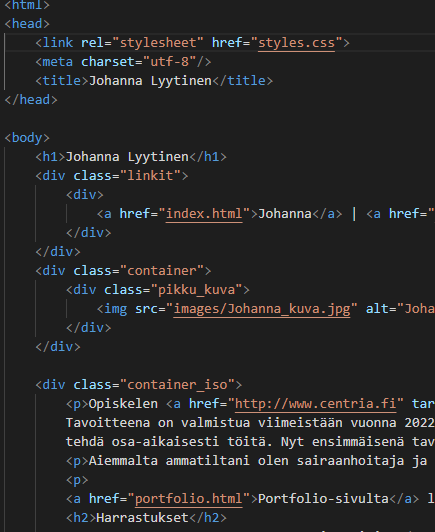
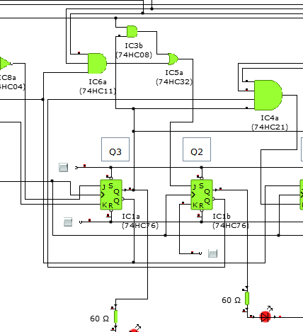
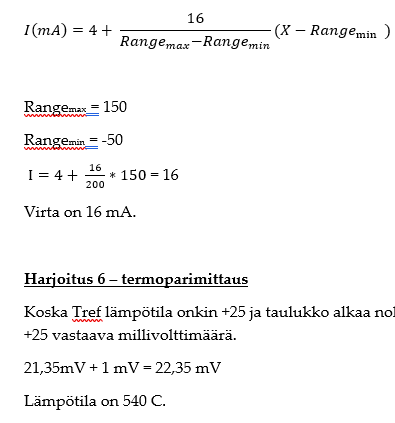

Opiskelen toista vuotta tieto- ja viestintätekniikan insinööriksi Centria Ammattikorkeakoulussa. Asun Tampereella aviomieheni ja tyttäremme kanssa. Perhe-elämän ja opiskelun yhdistäminen vaatii suunnitelmallisuutta ja aimo annoksen opiskelumotivaatiota.
Aiemmalta ammatiltani olen sairaanhoitaja ja olen työskennellyt 15 vuotta sairaanhoitajana eri sairaaloissa ja klinikoissa, niin Suomessa kuin Sveitsissäkin. Sairaanhoitajana olen oppinut paineensietokykyä, yhteistyökykyä ja muuttuviin tilanteisiin reagointia. Uskon, että sairaanhoitajana hankitut taidot ja tiedot tukevat myös insinöörinä toimimista.
Vapaa-aikani kuluu enimmäkseen opiskelujen ja kiipeilyn parissa. Käyn yhdessä perheen ja ystävien kanssa kiipeilemässä ja minut löytääkin harva se ilta Tampereen Kiipeilykeskuksen seiniltä. Kiipeilyn lisäksi käyn mielelläni myös retkeilemässä ja lenkkeilemässä. Lukeminen kuuluu myös harrastuksiini.
Tämä osio täydentyy sitä mukaa kun suoritan kursseja.
Haluatko kuulla lisää? Lähetä minulle sähköpostia osoitteeseen: johanna.lyytinen@centria.fi
Ohjelmoinnin perusteet kurssilla opin perusrakenteita C++ :sta. Muuttujat, taulukot, ehtolauseet ja silmukat tulivat tutuiksi.
Tällä kurssilla opin IP-verkkojen perusteita ja tein paljon simulointiharjoituksia PacketTracer- ohjelmalla. Tein muun muuassa kotiverkon simulointiharjoituksen.
Tällä kurssilla opin perusrakenteet CSS:stä ja HTML:stä. Opin myös responsiivista web-suunnittelua ja tein tämän sivuston loppuharjoituksena kurssille.
Kurssilla opin analogiaelektroniikan ja digitaalielektroniikan perusteet. Tein paljon simulointiharjoituksia Yenka-ohjelmalla ja harjoittelin myös koulun laboratoriossa muun muuassa logiikka-analysaattorin käyttöä.
Tämä kurssi antoi perustiedot ja -taidot Python-ohjelmoinnista.
Automaatiotekniikan kurssilla pääsin kurkistamaan automaatiotekniikan perusasioihin. Tein tehtäviä itsenäisesti, mutta niiden lisäksi tällä kurssilla pääsin tekemään harjoituksia myös koulun automaatiolaboratorioon. Kussilla opittiin muun muuassa mittaustekniikkaa, kenttäväyliä ja säätöpiirejä.
